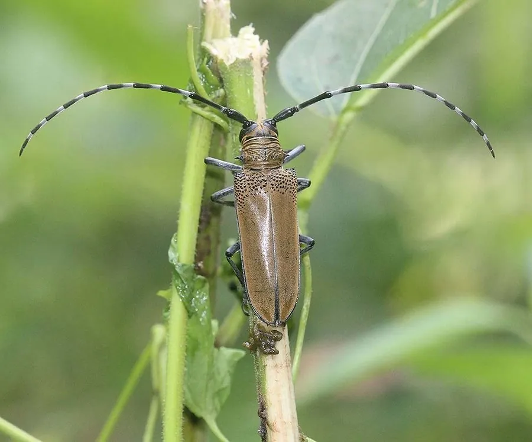

昆虫 · 动物界
桑天牛 Apriona germari

体被黄褐色绒毛的中型天牛，幼虫蛀食桑树、苹果和毛白杨等枝干，是桑园和果园的重要蛀干害虫。
- 分类
- 门节肢动物门纲昆虫纲目鞘翅目科天牛科属桑天牛属
- 栖息环境
- 桑园、果园和杨树林，幼虫在枝干内生活
- 地理分布
- 中国大部分地区、日本和朝鲜半岛
- 保护级别
- 暂无评估；重要蛀干害虫
物种志
桑天牛成虫体长约 2.5–3.5 cm，体黑褐色，密被黄褐色或灰黄色绒毛，鞘翅基部有黑色颗粒，翅面有纵向刻纹，前胸背板两侧有刺突。触角长，雄虫触角超过体长，雌虫产卵管明显。幼虫乳白色，头部褐色，在枝干内蛀食。
它主要危害桑树、苹果、梨、毛白杨等树木，幼虫在枝干内蛀食木质部，形成纵向蛀道，并在蛀孔排出木屑和虫粪，导致枝条枯死、树势衰弱。桑天牛分布于中国大部分地区、日本和朝鲜半岛，是桑园和果园的重要害虫。防治以剪除虫枝、人工捕杀成虫、树干涂白和释放天敌为主，桑园中要及时清理受害枝条，减少虫源。
形态与习性
- 食性幼虫蛀食桑树、苹果等枝干；成虫啃食嫩枝树皮
- 体长成虫约 2.5–3.5 cm
- 识别体被黄褐色绒毛，鞘翅基部有黑色颗粒
- 危害蛀道导致枝条枯死、树势衰弱
- 防治剪除虫枝、人工捕杀成虫、树干涂白和释放天敌
趣味知识
- 桑天牛体表覆盖黄褐色绒毛，看起来毛茸茸的。
- 它的幼虫在枝干里蛀食，蛀孔常排出木屑和虫粪。
- 桑园里及时剪掉受害枝条，是防治桑天牛的重要措施。